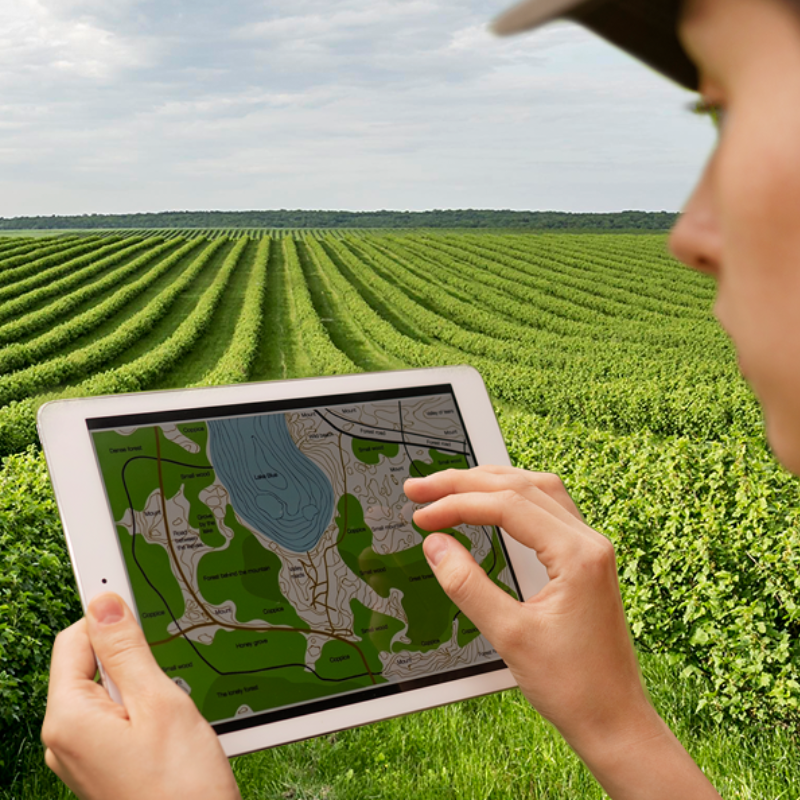

Como a
Floratech funciona
Do satélite do INPE à tela do seu celular em segundos. Entenda o processo completo de monitoramento climático rural.
Acessar painel agora
Passo a passo
INPE coleta os dados via satélite
Satélites do INPE orbitam o Brasil continuamente, registrando focos de calor, temperatura superficial, cobertura de nuvens e precipitação em todas as regiões. Esses dados são enviados para o banco do INPE diariamente.
Floratech processa e calcula o score
Nossa plataforma consome a API pública do INPE e aplica um algoritmo que combina três variáveis: número de focos ativos, dias consecutivos sem chuva e precipitação acumulada. O resultado é um score de risco classificado em Baixo, Médio ou Alto.
Você seleciona seu estado
No painel de monitoramento, basta escolher seu estado no menu. A Floratech exibe instantaneamente o score de risco atual, as métricas climáticas detalhadas e o histórico dos últimos cinco meses de focos de queimadas.
Você age com antecedência
Com a informação em mãos, você pode tomar medidas preventivas antes que uma queimada afete sua propriedade: limpar aceiros, suspender uso de fogo, reforçar vigilância e acionar autoridades se necessário. Informação salva lavouras.
Por que escolher a Floratech?
100% Gratuita
Sem mensalidade, sem plano premium. Todos os dados do painel de monitoramento são gratuitos para qualquer produtor rural.
Sem instalação
Funciona diretamente no navegador do celular, tablet ou computador. Nenhum aplicativo para baixar ou atualizar.
Dados oficiais
Toda informação vem diretamente do INPE — a fonte mais confiável de monitoramento ambiental do Brasil.
Score simples
Sem jargões técnicos. O score de risco — Baixo, Médio ou Alto — foi desenhado para ser compreendido por qualquer pessoa.
Histórico completo
Acompanhe a evolução do risco nos últimos meses no seu estado e planeje a gestão da propriedade com mais segurança.
Alertas (em breve)
Cadastre-se para receber notificações por e-mail ou SMS quando o risco na sua região aumentar. Funcionalidade prevista para 2027.
Nossas fontes de dados
A Floratech utiliza exclusivamente fontes públicas e oficiais do governo brasileiro para garantir a máxima confiabilidade das informações.